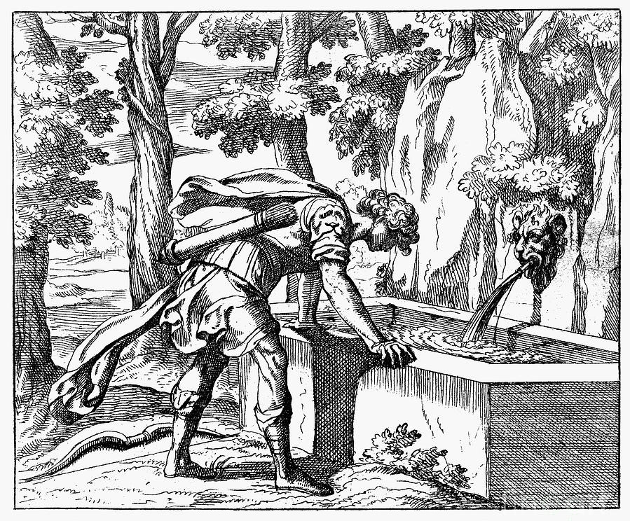
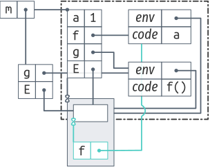
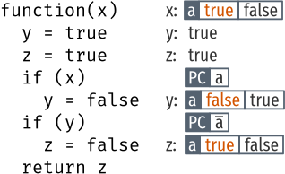
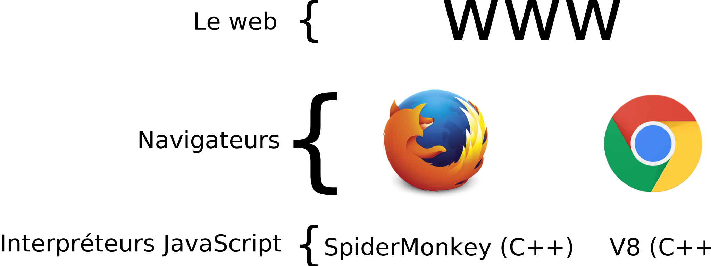

Sécuriser les applications web exécutées dans les navigateurs...

...en analysant les programmes JavaScript
1. Problématique : étendre des interpréteurs pour sécuriser JavaScript
2. Contribution : construire un interpréteur par
modules
3. Contribution : détourner Narcissus
Projet SecCloud du labex CominLabs (2012-2016)
Sécuriser les applications web exécutées dans les navigateurs...
...en analysant les programmes JavaScript
JS is the only language natively supported by navigators
Makes it popular
Établir les dépendances entre variables :
Dépendance implicite :
Permettent d'assurer la confidentialité et l'intégrité des données
Buts :
Analyse dynamique de flot d'information (Austin et Flanagan, 2012)
if only A can see priv(X), only A can see priv(Y)
details in paper; we are interested in implementation

case IF:
- if (getValue(execute(n.condition, x)))
+ let cond = getValue(execute(n.condition, x), pc);
+ if (cond instanceof FacetedValue) {
+ evaluateEach(cond, function(v, x) {
+ if (v)
+ execute(n.thenPart, x);
+ else if (n.elsePart)
+ execute(n.elsePart, x);
+ }, x);
+ }
+ else if (cond)
execute(n.thenPart, x);
else if (n.elsePart)
execute(n.elsePart, x);
break;640 lignes modifiées sur 1500
Inconvénients : duplication de code et mélange des préoccupations
pragmatic: use what's already in the language
Interpréteurs extensibles par construction :
Étendre un interpréteur existant :
Un objet expose une interface :
var m = {
parse(file) { ... },
exec(ast) { ... }
}Une fonction immédiatement appelée (FIA) contrôle la visibilité :
var m = (function(){
function parse(file) { ... }
function exec(ast) { ... }
function _doExec(node) { ... }
return { parse, exec }
}())
<term> ::= <num>
| <term> + <term>
<num> ::= 0 | 1 | 2 | ...
eval : Term -> Integer
show : Term -> String
Ingrédients :
numvar num = {
new(n) { return {__proto__: this, n } },
eval() { return this.n }}explain objects
explain prototype delegation
numvar num = {
new(n) { return {__proto__: this, n } },
eval() { return this.n }}
var e1 = num.new(3)
e1.eval() //: 3plusvar plus = {
new(l, r) { return {__proto__: this, l, r } },
eval() { return this.l.eval() + this.r.eval() }}
var e2 = plus.new(num.new(1), num.new(2))
e2.eval() //: 3Un foncteur transforme des modules :
var M = function(base) {
function f1(m) { ... }
function f2(m) { ... }
return { f1(base.m1), f2(base.m2) }
}
var m = M({m1, m2})showvar show = function(base) {
var num = {__proto__: base.num,
show() { return this.n.toString() }}
var plus = {...}
return {num, plus}
}showvar show = function(base) {
var num = {__proto__: base.num,
show() { return this.n.toString() }}
var plus = {...}
return {num, plus}
}
var s = show({num, plus})
s.plus.new(s.num.new(1), s.num.new(2)).show() //: "1+2"
s.plus.new(s.num.new(1), s.num.new(2)).eval() //: 3Syntaxic noise of s.plus, s.new...
with crée un environnementÉquivalent à un appel de fonction :

takes an object from which an environment is created
with pour activer un modulewith(show({num, plus})) {
plus.new(num.new(1), num.new(2)).show() //: "1+2"
}var double = function(base) {
var num = {
__proto__: base.num,
eval() { return base.num.eval.call(this) * 2 }}
return {__proto__: base, num}}
with (double({num})) {
plus.new(num.new(1), num.new(2)).eval() //: 6
}like proceed
with (double({num})) {
with (double({num})) {
with (double({num})) {
plus.new(num.new(1), num.new(2)).eval() //: 24
}}}2*2*2 = 8x
var state = function(base, count = 0) {
var num = {__proto__: base.num,
eval() { count++;
return base.num.eval.call(this) }},
var plus = {...}
var getCount = function() { return count }
return {__proto__: base, num, plus, getCount}}
with (state({num, plus})) {
getCount() //: 0
plus.new(num.new(1), num.new(2)).eval() //: 3
getCount() //: 3
}with (state({num, plus})) {
with (double({num})) {
with (show({num, plus})) {
getCount() //: 0
var n = plus.new(num.new(1), num.new(2))
n.eval() //: 6
getCount() //: 3
n.show() //: "1+2"
}}}Works because we defined them adequately
No safeguards from interferences
Un schéma de composition original pour des
interpréteurs modulaires en JavaScript
Concepts de modularisation :
with pour activer les modulesApproche ascendante : construire un interpréteur extensible
alternative to state of the art tailored to JS
Solution pragmatique pour JavaScript
État de l'art, AspectScript [TLT10] :
AspectScript: suffisant mais instatisfaisant
var Narcissus = (function(){
var globalBase = { ... }
function ExecutionContext(type, version) { ... }
function getValue(v) { ... }
function putValue(v, w) { ... }
function evaluate(code) { ... }
return {
globalBase: globalBase,
evaluate: evaluate,
...
}
}())var m = (function(){
var a = 1
function f() { return a }
function g() { return f() }
return {g: g}
}())
m.g() //: 1Supposition : on dispose d'une référence E
var m = (function(){
var a = 1
function f() { return a }
function g() { return f() }
return {g: g}
}())
m.g() //: 1
m.E.a = 2
m.g() //: 2var m = (function(){
var a = 1
function f() { return a }
function g() { return f() }
return {g: g}
}())
m.E.a = 2
delete m.E.a
m.g() //: NaNvar m = (function(){
var a = 1
function f() { return a }
function g() { return f() }
return {g: g}
}())
m.g() //: 1var m = (function(){
var a = 1
function f() { return a }
function g() { return f() }
return {g: g}
}())
m.g() //: 1
m.E.a = 2
m.g() //: 2
delete m.E.a
m.g() //: 1var m = (function(){
var a = 1
function f() { return a }
function g() { return f() }
return {g: g}
}())
m.g() //: 1
m.E.a = 2
m.g() //: 2
delete m.E.a
m.g() //: 1var m = (function(){ ... }())
m.g() //: 1
var e1 = { a: 2,
f() { return 2 * m.E.a }}
pushEnv(e1, m.E)
m.g() //: 4
var e2 = { f() { return -m.E.a }}
pushEnv(e2, m.E)
m.g() //: -2
removeEnv(e1, m.E)
m.g() //: -1var m = (function(){ ... }())
m.g() //: 1
var e1 = { a: 2,
f() { return 2 * m.E.a }}
pushEnv(e1, m.E)
m.g() //: 4
var e2 = { f() { return -m.E.a }}
pushEnv(e2, m.E)
m.g() //: -2
removeEnv(e1, m.E)
m.g() //: -1var m = (function(){ ... }())
m.g() //: 1
var e1 = { a: 2,
f() { return 2 * m.E.a }}
pushEnv(e1, m.E)
m.g() //: 4
var e2 = { f() { return -m.E.a }}
pushEnv(e2, m.E)
m.g() //: -2
removeEnv(e1, m.E)
m.g() //: -1var m = (function(){ ... }())
m.g() //: 1
var e1 = { a: 2,
f() { return 2 * m.E.a }}
pushEnv(e1, m.E)
m.g() //: 4
var e2 = { f() { return -m.E.a }}
pushEnv(e2, m.E)
m.g() //: -2
removeEnv(e1, m.E)
m.g() //: -1withvar m = (function(){
var E = Object.create()
with (E) {
var a = 1
function f() { return a }
function g() { return f() }
return { g: g, E: E }
}
}())
m.g() //: 1
m.E.a = 2
m.g() //: 2with adds an environment
but here we want to modify that environment
not equivalent to a (function())
var m = (function(){
var E = Object.create()
with (E) {
var a = 1
function f() { return a }
function g() { return f() }
Object.setPrototypeOf(E, {f, ...})
return { g: g, E: E }
}
}())
m.g() //: 1
m.E.a = 2
m.g() //: 2
no path to keys in env module from E
have to add them
necessary because no access to module env

Nommer une valeur :
- putstr("njs> ")
+ var repl_prompt = "njs> "
+ putstr(repl_prompt)Retarder la finalisation :
1 interpréteur
1 analyse
640 lignes modifiées
1 interpréteur
4 analyses
62 lignes modifiées
Résultats identiques sur test262 (tests ECMAScript)
| Interpréteur | Temps d'exécution de 2500 tests |
| Narcissus | 1040 sec |
| Narcissus (with) | 1218 sec (+17%) |
| Narcissus multi-facettes (AF-12) | 1215 sec |
| Narcissus multi-facettes (with) | 1301 sec (+7%) |
AspectScript [TLT-10] : 500% à 1500% d'overhead
fix a bug only once with diverting
Narcissus multi-facettes is with empty PC
Problème: étendre des interpréteurs pour
sécuriser JavaScript
Contributions :
with, délégation
with
Construire un interpréteur par modules :
Détourner Narcissus :
with et AspectScriptwith != portée dynamiquefunction f() { return x }
f() //: undefined
var x = 1
f() //: 1
with ({x: 42}) {
f() //: 1
}Analyses statiques :
Analyses dynamiques :
No safeguards
Have to write the modules carefully to allow composition
Same problems with Aspects
Possible de retourner un proxy sur l'objet scope qui empêche de modifier n'importe quelle référence, en utilisant une whitelist
Ou bien le symbole spécial `unscopables`
Flot implicite (Austin et Flanagan, 2012)


Autres interpréteurs JavaScript
s.plus.new(num.new(1), s.num.new(2)).show()
//: TypeError: this.l.show is not a functionProblème de types :
plus.new: Term -> Term -> Term
s.plus.new: Show -> Show -> Show
Le but de with en JavaScript :
canvas.begin()
canvas.setColor(...)
canvas.drawRectangle(...)
canvas.setColor(...)
canvas.drawCircle(...)
canvas.finish()with (canvas) {
begin()
setColor(...)
drawRectangle(...)
setColor(...)
drawCircle(...)
finish()
}(function(){
reflectArray()
reflectFunction()
...
}())(function(){
function populateEnv() {
reflectArray()
reflectFunction()
}
}())
load("facets-analysis.js")
Narcissus.populateEnv()